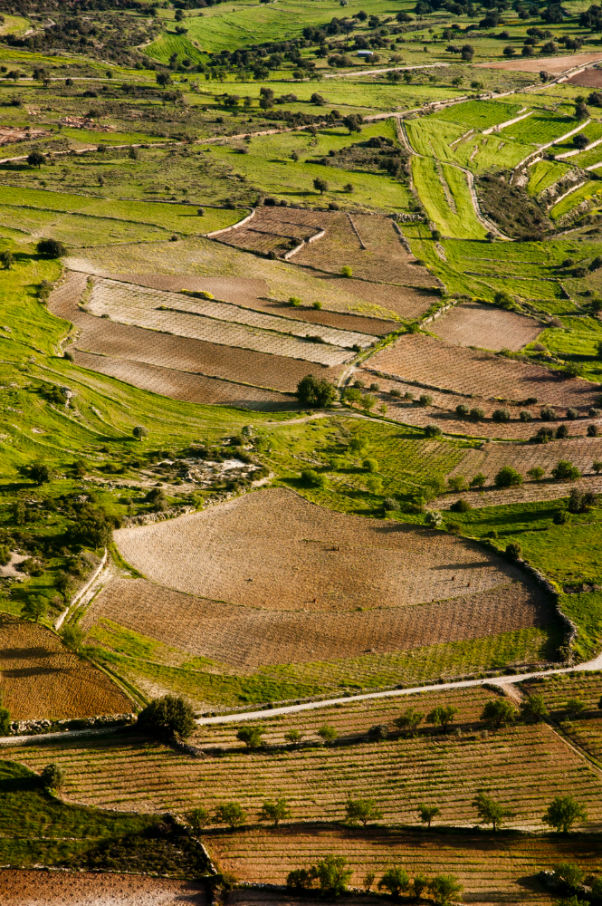
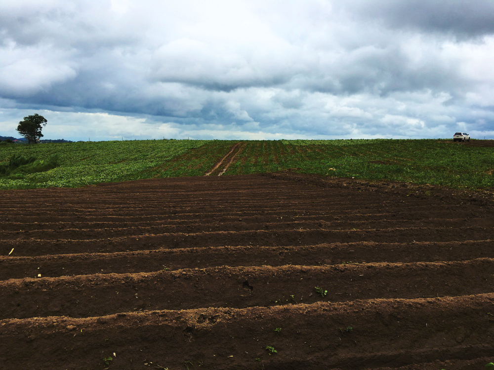

<div class="page-top">
    <h1 class="page-title">Projetos</h1>
</div>

<main class="site-container">
    <section class="projects">
        <!-- Cada card é um link clicável -->
        <a class="project-card" href="#" data-projeto="pagina1" aria-label="Mapa de áreas agrícolas junto a CONAB">
        
        <div class="card-overlay">
            <h2>Mapeamento de áreas agrícolas junto a CONAB</h2>
        </div>
        </a>

        <a class="project-card" href="#" data-projeto="pagina2" aria-label="Mapeamento e monitoramento de cultivos">
        
        <div class="card-overlay">
            <h2>Mapeamento e Monitoramento de Cultivos Agrícolas no Brasil</h2>
            <span>Priscilla Azevedo dos Santos - Doutoranda INPE</span>
            <span>Marcos Adami - Orientador INPE</span>
        </div>
        </a>

        <a class="project-card" href="#" data-projeto="pagina3" aria-label="Detecção de desmatamento">
        
        <div class="card-overlay">
            <h2>Detecção de Desmatamento e Cicatriz de Fogo no Cerrado via RNAs</h2>
            <span>Marcos Adami - Orientador INPE</span>
            <span>Ana Júlia Dias</span>
            <span>Lênio Soares Galvão</span>
            <span>Valdivino Santiago</span>
        </div>
        </a>

        <a class="project-card" href="#" data-projeto="pagina4" aria-label="Estimativa de cobertura do solo">
        
        <div class="card-overlay">
            <h2>
            Estimativa do Percentual de Cobertura do Solo por Resíduos Culturais
            </h2>
            <span>Marcos Adami - Orientador INPE</span>
            <span>Marina Galdez de Castro Silva - Mestranda INPE</span>
            <span>Julio Franchini - Embrapa Soja</span>
        </div>
        </a>
    </section>
    <nav class="project-nav" role="navigation" aria-label="navegação de projetos">
        <button class="nav-btn btn-prev" data-action="prev" aria-label="Página anterior" aria-disabled="true">&lt;</button>

        <div class="page_info" aria-live="polite" aria-atomic="true">
        <span class="page-current">1</span>
        <span class="page-sep">/</span>
        <span class="page-total">4</span>
        </div>

        <button class="nav-btn btn-next" data-action="next" aria-label="Próxima página" aria-disabled="false">&gt;</button>
    </nav>
</main>  